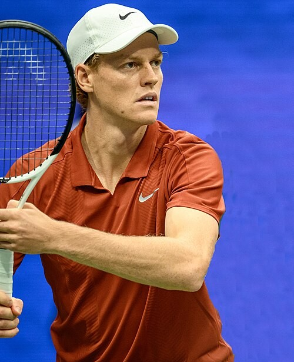

Jannik Sinner trionfa agli Australian Open e conquista il titolo!
C’è un momento preciso in cui la storia del tennis italiano è cambiata per sempre, e quel momento porta la firma di Jannik Sinner sul cemento di Melbourne. Con i suoi straordinari successi agli Australian Open, il campione altoatesino ha spezzato un tabù che durava da quasi mezzo secolo e ha inaugurato una nuova era per lo sport azzurro e mondiale. La prima storica impresa è arrivata al termine di una finale destinata a restare negli annali. Di fronte a un avversario esperto e temibile come Daniil Medvedev, Sinner si è ritrovato sotto di due set, apparentemente a un passo dalla sconfitta. Proprio nel momento più difficile, però, è emersa la sua freddezza glaciale: punto dopo punto, game dopo game, Jannik ha ribaltato completamente l'inerzia dell'incontro imponendosi al quinto set dopo quasi quattro ore di battaglia.

Con quel successo ha conquistato il suo primo trofeo del Grande Slam, diventando il primo tennista italiano nella storia a trionfare a Melbourne e riportando uno Slam maschile in Italia dopo ben quarantotto anni di attesa. A distanza di dodici mesi, Sinner si è ripresentato sul campo centrale australiano non più da sfidante, ma da numero uno del mondo e campione in carica. Il peso delle aspettative e la pressione del favorito non hanno minimamente scalfito il suo rendimento. Lungo l'arco delle due settimane ha imposto un ritmo insostenibile per chiunque, mostrando una superiorità tecnica, fisica e mentale schiacciante. Nell'atto conclusivo contro Alexander Zverev, Jannik ha gestito ogni fase del match con autorità assoluta, chiudendo la pratica in tre set e concedendosi il lusso di difendere il titolo senza mai cedere il servizio in tutta la finale.